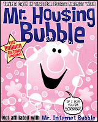

The frontman looks for cover: Bush cowers behind former Fed Commissar Alan Greenspan, architect of the debt bubble that is devouring the world economy.
TODAY correspondent Ann Curry: Some Americans believe that they feel they’re carrying the burden because of this economy.
George W. Bush: Yeah, well…
Curry: They say we’re suffering because of this.
Bush: I don’t agree with that.
Curry: You don’t agree with that? It has nothing do with the economy, the war, the spending on the war?
Bush: I don’t think so. I think actually the spending in the war might help with jobs.
Curry: Oh, yeah?
Bush: Yeah, because we’re buying equipment, and people are working. I think this economy is down because we built too many houses and the economy is adjusting. --
TODAY Show, February 18
Occasionally the Mass Murderer-in-Chief will make a candid comment that serves as a core sample of his personality. Beneath the superficial affability that disguises his inbred sense of unearned privilege, below the dense-pack arrogance, hidden away under multiple layers of ignorance and corruption, at the center of his being, Bush is a creature of the kleptocratic State, in its crudest and most destructive form.
It’s not just that Bush has completely internalized a dimwit’s version of Keynesianism. He also appears genuinely to believe that war –heedless wholesale destruction -- is more profitable than constructive private enterprise.
“Y’see” -- I can imagine him saying in his practiced mock-drawl, his shoulders hunched over in that oddly simian way of his, a self-satisfied smirk creeping across that face that could have been designed by Matt Groening – “these idiots in the private sector jus’ went out and built a whole buncha houses nobody could afford, an’ now we gotta big mess. Don’t know why the fools went and overbuilt the housing market. Here’s the cool thing, though: You can’t overbuild the military. Heck, if we build too many bombs, or tanks, or missiles, we can always find some use for ‘em, and if we can’t, I’m sure the Israelis or the Saudis or someone can take ‘em off our hands – even if we have to pay them to.”
While Bush is well-known for his significant contributions to the practice of military Keynesianism, he has played no small role in expanding the practice of the domestic version as well – including the same vastly overbuilt housing and mortgage market.
The unwinding of the sub-prime mortgage market is what triggered the ongoing – and ever-escalating – global financial crisis. Bush (who probably thinks the term “sub-prime” refers to a steak that costs less than a C-note) probably doesn’t remember that he was directly involved in abetting the sub-prime disaster. Yes, the Fed created the mortgage mess as a matter of deliberate policy. But Bush did his considerable best to help things along.
"Low interest rates have encouraged a housing boom here in America--and that's good, that's good," Bush exulted at an October 2003 forum on Hispanic-American affairs in California, years before he “discovered” that a housing boom is a Bad Thing. In the same speech, he urged that banks make more “zero down payment loans available to first-time buyers[,] whose mortgages are guaranteed by the Federal Housing Administration….”
If you want more of something – in this case, risky mortgage loans to dubiously qualified borrowers – subsidize it. And the subsidies that aided the housing bubble didn’t come only through the FHA, of course. Fannie, Freddie, and Ginnie all got into the act, as well, creating a world-historic debt bubble that is now rapidly collapsing. This wasn’t done out of an altruistic desire to help every American own a home, but because the politically connected investor class realized unfathomably huge profits in generating that debt and finding perversely creative ways to repackage it.

In a sane world, that would be a noose, rather than a medal -- and both of them would be on the scaffold. (I'm kidding. Sort of.)
As James Howard Kunstler* points out, our present financial system is nothing more than a “daisy-chain of liabilities” – beginning with the “dollar” itself, an instrument of debt posing as a form of currency.
Kunstler chose an unfortunate name for his must-read blog (caveat lector), and his assumptions regarding “Peak Oil” are disputable. He is entirely correct, however, in predicting an impending economic depression he calls the “Long Emergency,” and his analysis of the financial system strikes me as sound.

Bogus deity, real money: An ancient Greek silver coin bearing an image of the goddess Artemis.
Where once every national currency was backed by “reserves” of something considered valuable – generally gold – “reserves” came to be “denoted in just currencies themselves, or certificates that represented the existence of currencies held elsewhere, or pixels on a screen representing the movement of alleged piles of currency from one place to another, or the intention to move a notional pile of currency to a theoretical destination, and then that became an algorithm purporting to represent the future arrival of a notional pile of money at theoretical destination-to-be-named-later, and so on…. And after a while, the nature of money became so detached from anything real, so abstract, that its very existence became hypothetical. Even this `worked’ for a while, in terms of the managers of this money being able to `cream’ substantial amounts of this hypothetical money off the top of their notional operations and translate that hypothetical cream into Tribeca lofts, Gulfstream jets, and other real luxuries.”
“The rest of the economic food chain” – meaning serfs like thee and me – “got stripped of remaining asset value … until they had nothing left to trade with except debt, in one form or another, and this phase of the game turned out to have a short lifetime when the only debts remaining to be monetized were the contracts on houses occupied by people with no hope of ever meeting their obligations – and then the whole sorry racket started to go up in vapor.”
At present, the banks – with the quiet help of Helicopter Ben’s counterfeiting agency – “are pretending to have money and desperately cadging loans from all comers to keep appearances up, but the loans can’t come in fast enough.” At some point, somewhere in this purportedly wealthy country, news will leak out that an inconspicuous bank is about to fail. This will trigger a bank run, and the contagion will spread far and fast.
That’s what happened last September at England’s Northern Rock bank, that country’s fifth-largest mortgage lender. Northern Rock quietly applied to the Bank of England for emergency aid to prevent a bank run. Instead, it precipitated one.
In the course of a single weekend, before the government guaranteed Northern Rock's deposits and police turned away panicky customers, the bank lost some $4 billion as customers emptied their accounts. As the Economist magazine notes, this was England’s first bank run since 1866. Just a few days ago, the British government announced – after failing to arrange a subsidized take-over by Richard Branson’s Virgin Group -- that it was nationalizing Northern Rock.
Consider this: Richard Branson is willing to risk life, limb, and fortune in his effort to pioneer commercial spaceflight, but he wants nothing to do with the banking business unless the taxpayers provide him with parachute.


Right now, as noted above, American banks are doing exactly the same thing that triggered the run on Northern Rock: They’re on life support to the central bank, hoping to forestall depositor panic. But, once again, at some point, a significant bank failure will happen, a run will materialize and metastasize – and, as Kunstler writes, “that would be the magic moment that the USA discovered it was no longer a rich nation.”
Northern Rock may yet prove to be the pebble that starts a global financial avalanche. Or that catastrophe may begin somewhere on this side of the Atlantic. But it is coming, and probably sooner than most people think.
The last Depression we endured took place in a country with enviable natural resources, a large and growing industrial capacity, and blessed with a population familiar with discipline, thrift, and the deferral of gratification. The next depression, Kunstler predicts, “will play out against the background of a society that has pissed away its oil endowment, bulldozed its factories, arbitraged its productive labor, destroyed both family farms and the commercial infrastructure of main street, and trained its population to become overfed diabetic TV zombie `consumers’ of other peoples’ productivity, paid for by `money’ they haven’t earned.”
To the extent this description of the hoi polloi is accurate, the behavior described reflects the priorities of the ruling oligarchy, in which – perhaps to an extent unprecedented in our history – fortunes are made through the vulgar redistribution of wealth by the State. And in this respect, George W. Bush is a perfect exemplar of his class.
In his infuriating and informative new book Free Lunch: How the Wealthiest Americans Enrich Themselves at Government Expense (And Stick You with the Bill), David Cay Johnston recounts the old and sadly neglected story of how Bush the Younger became wealthy. Like Kunstler, Johnston is mistaken in some important ways, but he does an admirable job exposing the machinations of our ruling oligarchy, of whom Bush the Lesser is a suitable specimen.
During the reign of Bush the Elder, Duhbya was wealthy, but not extravagantly so. Unlike Joseph in Egypt, under whose hand every venture prospered, Bush the Younger had a knack for running businesses into the ground. His was the touch of Tantalus, rather than Midas.
Bush did know how to manage one asset only a handful of Americans enjoy: His family political connections, many of which we reinforced by his inherited membership in Yale’s Skull & Bones secret society. (Depending on whom you ask, Skull & Bones is either a satanic coven or an oddly packaged Good Old Boy network; my view is that it is a little of both.)

"Yeah, we may look like the founders of the Paul Anka Fan Club -- but trust us, we're evil": George "Poppy" Bush (immediate left of the Grandfather Clock) and fellow Bonesmen.
Unlike his father or his grandfather, Bush the Younger didn’t take his Bonesman duties all that seriously. As an initiate, he was given the new name “Temporary” as a placeholder until he thought of a more appropriate sobriquet, and he never bothered to change the default. So to this day, Bush the Younger remains “Temporary” to his Bonesman brethren.
In the early 1990s, several Bonesmen were among the investors Bush turned to when he conceived the idea of buying the Texas Rangers. The underperforming team wasn’t a bargain at any price, but Bush believed that the Rangers could quickly become profitable if a new stadium could be built for them. In fact, the investors quickly devised a plan to build a 200-acre “entertainment zone” surrounding the new stadium, including hotels and restaurants.
Bush and his cronies could easily afford to buy the Rangers; they could even afford to build a stadium. But getting the land to build the “entertainment zone” would be a little more difficult, since many of those who owned the property weren’t interested in selling.
Ah, I see that at least some of you know where this story is headed….
Rather than paying what the owners would have been willing to take for their land, Bush and his buddies “simply had the city of Arlington seize the land they needed and more, using government’s power of eminent domain,” recalls Johnson.
The new stadium was built by a municipal “Sports Authority” (represented in court by Ray Hutchison, husband of Texas Republican Senator Kay Bailey Hutchison). The Authority was funded through a half-cent increase in sales tax approved in a quick and dirty referendum held after Bush threatened to move the Rangers to another city – a now-familiar extortion tactic by owners of professional sports teams seeking municipal subsidies. It also administered an interest-free rent-to-own arrangement for the team’s new owners, with every payment – and all maintenance expenses – applied to the purchase price of the stadium.
“The investors Bush assembled paid $86 million for the Rangers,” summarizes Johnson. “They sold nine years later for $250 million. The $164 million profit was $38.5 million less than the [total] subsidy” provided through the Authority. As a result, “Every dollar that Bush and the other investors pocketed when they sold the team came from the taxpayers…. Bush and his investors made no economic profit from the market when they sold the team. The only money they received came from the increased sales taxes that flowed into the stadium deal” – and that deal was made possible by the theft and extortion carried out through eminent domain.
In many ways, Bush’s Arlington Scam prefigured the much larger and infinitely more murderous criminal enterprise called the Iraq War. In Texas, Bush used the power of eminent domain to seize property to enrich himself and his buddies; in Mesopotamia, he arranged a military occupation of an energy-rich nation for more or less the same purpose.
In both cases, the taxpayers were plundered for the benefit of Bush and his fellow kleptocrats, although in the case of Iraq the price is paid through the relentless debasement of the currency, and the resulting theft of our earnings and savings. Oh, yes, the costs also include the death, dismemberment, or derangement of tens of thousands of Americans sent to colonize Iraq.
But from where Bush and his comrades sit the war is a sweet deal for the economy, and it’s churlish of the rest of us to cavil over the costs of such a profitable enterprise. After all, Bush explained with an idiot child’s impression of regal generosity in the above-referenced TODAY show interview, “we’re just about to kick out 157 billion dollars to our taxpayers” in the form of tax rebates, a lagniappe that will do little more than trigger a brief and inconsequential spasm in a dying consumer economy.
The most useful thing any of us can do with that rebate is to use it – along with whatever liquid funds we can spare – to invest in some combination of the three Noble Metals: gold, silver, and lead.
UPDATE: The Contagion Spreads....
Germany's state-owned KfW banking group, which invested billions in the US sub-prime mortgage market, is "on the verge of bankruptcy, with its supposed[ly] wonderful investments worth little more than the paper [they were] printed on," reports Der Spiegel. And other state-owned banks are beginning to totter:
"The state of North Rhine-Westphalia has injected 1 billion [pounds] into WestLB, another state-owned bank, as well as providing the ailing bank with another 3 billion [pounds] in loan guarantees. The situation is even worse in Saxony, where the state has issued 2.73 billion [pounds] in guarantees to Sachsen LB, that state's Landesbank, as Germany's state-backed regional banks are known. The other state-owned banks are providing another 14 billion [pounds] in guarantees. Hamburg-based HSH Nordbank urgently needs 1 billion [pounds] in fresh capital, while Bayern LB announced Tuesday that the bank's chief executive, Werner Schmidt, will be stepping down as of March 1 as a result of the crisis.
"The situation for Germany's public banks has become so dramatic that it threatens to topple what has been one of the key pillars of the country's banking system. The state-owned banks are supposed to bail each other out when necessary, but the problem is that many are in trouble themselves and hardly in a position to help their peers. And things could get even worse."
That's Will Grigg's First Iron Law of Reality (c): Things can always get worse. Where the international banking system is concerned, they will get radically worse in a hurry.
(Thanks to Lew Rockwell for drawing attention to the Der Spiegel story.)
*In the original version, I mistakenly referred to James Howard Kunstler as "William" Kunstler. That's a pretty major "whoops," one I regret as earnestly as I appreciate a reader's gentle correction thereof.
Point of Personal Privilege...
Please forgive the lengthy hiatus between essays. During the past two days I did something uncommon -- I took the equivalent of a brief vacation. (My last genuine vacation was in August 2001, and my former employers managed to bisect that one by sending me to New York in the middle of it.) This was dictated by simple exhaustion.
Korrin has been in the hospital since early October, and even with the considerable and heroically generous help of my friends and family it's been difficult to maintain a reasonable work schedule while being a temporary single parent to five young children. I sure appreciate your patience, and your prayers.
Owing to problems with my local ISP, this post is uncommonly light on graphics and links. When those problems clear up, I'll probably revisit today's edition and upgrade it considerably.
 Don't forget: My new book, Liberty in Eclipse, is available at The Right Source.
Don't forget: My new book, Liberty in Eclipse, is available at The Right Source.Dum spiro, pugno!
15 comments:
Without a doubt we are financially doomed. At times it is very scary to comprehend. As a Christian I know it is wrong to worry, but with a wife who suffers from a chronic illness and little in the form of investments/money. I sometimes find myself gripped by panic attacks thinking about the future. As one who has spent his entire life in the woods - on my own I could survive but with my wife it would be a different story. All we can do is trust that our gracious heavenly Father will watch out for us.
The whole "we built too many houses" excuse is so typical of Bush. Here's a guy who trumpeted from the pulpit at every campaign stop in 2004 that we had a "record" number of home owners under his administration as proof of the solid economy, (Al Franken, such as he is, was quick to point out it was a useless statistic in that every president could say this since they started keeping records in 1964.)
Now we know why he was able to trumpet the statistic during his reelection campaign: It was a bubble he and the Fed had created, a bubble the American people are paying for right now.
Don't forget his being investigated by the SEC for his possible insider trading of Harken Energy stock back in 1990. They are all crooks and sociopaths.
Why should we be surprised with shrub's disconnect from reality? Wasn't it his 'daddy' who had never seen a supermarket scanner before?
When you're fed at the tax trough you don't see the real world. Need more money? Raise taxes or fire up the printing press, there's plenty left to take. Unfortunately, we as a country have reached a point in time where half or more of the population lives off of a government issued pay-check - guess who pays that bill?
Those who are not parasites on the dole are nothing more than wage slaves . . . Make no mistake about it, it is slavery. Just as the 'mastah' used to let some of his slaves work off the plantation as long as they sent a portion of their earning back - we are allowed to work as long as we let 'mastah govt' collect his share first.
I say elect Hillary so she can smash us into the smash us all into financial oblivion in the quickest possible manner - that's sarcasm folks in case you missed it.
One thing I don't get about my fellow libertarians is why a lot of them discount Peak Oil. I imagine that it has something to do with the fact that a lot of leftists have embraced the idea, as they have other malthusian ideas over the past decades, such as dieoff by overpopuluation and dieoff by global warming.
Peak Oil has some serious potential dieoff aspects, but the left didn't come up with it. Who believes in it is as irrelevant as what political motives they may have for doing so. (Think about StormFront endorsing Ron Paul.) What matters is whether the idea is valid.
Peak Oil is a proven concept. Oil production follows a bell curve. But the more important point is that world production is likely "in the zone" of the peak, which means that it probably has already happened or soon will.
Oh, and it would be impolite for me to carp on your aside about peak oil without complimenting you on the usual excellence of your post.
And after these things I saw another angel come down from heaven, having great power; and the earth was lightened with his glory. 2 And he cried mightily with a strong voice, saying, Babylon the great is fallen, is fallen, and is become the habitation of devils, and the hold of every foul spirit, and a cage of every unclean and hateful bird. 3 For all nations have drunk of the wine of the wrath of her fornication, and the kings of the earth have committed fornication with her, and the merchants of the earth are waxed rich through the abundance of her delicacies. 4 And I heard another voice from heaven, saying, Come out of her, my people, that ye be not partakers of her sins, and that ye receive not of her plagues. 5 For her sins have reached unto heaven, and God hath remembered her iniquities. 6 Reward her even as she rewarded you, and double unto her double according to her works: in the cup which she hath filled fill to her double. 7 How much she hath glorified herself, and lived deliciously, so much torment and sorrow give her: for she saith in her heart, I sit a queen, and am no widow, and shall see no sorrow. 8 Therefore shall her plagues come in one day, death, and mourning, and famine; and she shall be utterly burned with fire: for strong is the Lord God who judgeth her.
9 And the kings of the earth, who have committed fornication and lived deliciously with her, shall bewail her, and lament for her, when THEY SHALL SEE THE SMOKE OF HER BURNING, 10 Standing afar off FOR THE FEAR OF HER TORMENT, saying, Alas, alas, that great city Babylon, that mighty city! FOR IN ONE HOUR IS THY JUDGMENT COME. 11 And THE MERCHANTS OF THE EARTH SHALL WEEP AND MOURN OVER HER; FOR NO MAN BUYETH THEIR MERCHANDISE ANY MORE: [The nation of FAT LAZY "CONSUMERS" IS NO MORE] 12 The merchandise of gold, and silver, and precious stones, and of pearls, and fine linen, and purple, and silk, and scarlet, and all thyine wood, and all manner vessels of ivory, and all manner vessels of most precious wood, and of brass, and iron, and marble, 13 And cinnamon, and odours, and ointments, and frankincense, and wine, and oil, and fine flour, and wheat, and beasts, and sheep, and horses, and chariots, and SLAVES, AND SOULS OF MEN. 14 And THE FRUITS that thy soul lusted after ARE DEPARTED FROM THEE, AND ALL THINGS WHICH WERE DESIRED AND GOODLY ARE DEPARTED FROM THEE, AND THOU SHALT FIND THEM NO MORE AT ALL! 15 The merchants of these things, which were made rich by her, shall stand afar off for the fear of her torment, weeping and wailing, 16 And saying, Alas, alas, that great city, that was clothed in fine linen, and purple, and scarlet, and decked with gold, and precious stones, and pearls! 17 FOR IN ONE HOUR SO GREAT RICHES IS COME TO NOUGHT. And every shipmaster, and all the company in ships, and sailors, and as many as trade by sea, stood afar off, 18 And cried when they saw the smoke of her burning, saying, WHAT CITY IS LIKE UNTO THIS GREAT CITY! 19 And they cast dust on their heads, and cried, weeping and wailing, saying, Alas, alas, that great city, wherein WERE MADE RICH all that had ships in the sea by reason of her costliness! FOR IN ONE HOUR IS SHE MADE DESOLUTE. 20 REJOICE OVER HER, thou heaven, and ye holy apostles and prophets; FOR GOD HATH AVENGED YOU ON HER. 21 And a mighty angel took up a stone like a great millstone, and cast it into the sea, saying, THUS WITH VIOLENCE SHALL THAT GREAT CITY BABYLON BE THROWN DOWN, AND SHALL BE FOUND NO MORE AT ALL. 22 And THE VOICE OF HARPERS, AND MUSICIANS, AND OF PIPERS, AND TRUMPETERS, SHALL BE HEARD NO MORE AT ALL IN THEE; AND NO CRAFTSMAN, OF WHATSOEVER CRAFT HE BE, SHALL BE FOUND ANY MORE IN THEE; [That's certainly a reality in the US!] AND THE SOUND OF A MILLSTONE SHALL BE HEARD NO MORE AT ALL IN THEE; [America's once mighty industries are now silent and no more] 23 AND THE LIGHT OF A CANDLE SHALL SHINE NO MORE AT ALL IN THEE; AND THE VOICE OF THE BRIDEGROOM [Jesus Christ]AND OF THE BRIDE [His Church] SHALL BE HEARD NO MORE AT ALL IN THEE: for thy merchants were the great men of the earth; FOR BY THY SORCERIES WERE ALL NATIONS DECEIVED. 24 And in her was found the blood of prophets, and of saints, and of all that were slain upon the earth.
The utter judgment and destruction of America is coming and certain. I can't think of any other nation in history that so richly deserves God's vengeance and wrath like America. Once a Judeo-Christian nation, as a chaste bride for the Bridegroom, now the lowest of harlots, filled with every form of evil and malice imaginable. The time of this world, a world of darkness and wickedness and sin is coming to its utter eternal end. The time of God's eternal kingdom is at hand - a new heaven and a new earth, for the old shall pass away and be no more.
Will, the picture of Greenspan reminds me of this quote he made in 1966. "Gold and a free society are inseperable." I don't know what the context was, but I remember Dr. Paul saying that before Greenspan was asked to join the elite, he was for a 100% gold standard. Very interesting.
Sorry to hear of your wife's illness, and I hope it will clear up soon. I enjoy reading your column, even though I am not religious; I am a Libertarian with a capital L.
The Silent Critic asked about "Peak Oil."
Even if it weren't a myth (which of course is a logical possibility), we libertarians, free-marketers, etc. don't see peak oil as too much of an issue because we actually understand economics.
All proponents of the peak oil theory seem to propose the idea of a gradual fall off in the amount of petroleum produced on a YoY basis. I haven't seen anyone predict that the production will be anything other X one day, and then X-1 the day after, rather than X one day and then X-X the next. A gradual drop off, not an immediate one, in other words.
As supply for a good or service goes down and demand remains the same, price goes up. Price directly tracks demand relative to supply. Well at least that's how a freed market would work. Only government intervention can prevent the market mechanism from occurring.
So, what do we learn from this? As the supply of petroleum goes down in accordance with the peak oil theories it's price will go up in response. A freed market has another advantage that crops up during times of relatively high demand: alternative. Yes, the rise of the alternative. Whether it's nylon instead of silk or hemp, tea instead of coffee, Pepsi instead of Coke, or honey instead of sugar, alternatives pop-up when demand becomes known. There are alternatives to petroleum. Right now all of these are expensive in comparison, but if things go as the peak oil folks say they will that means that petrol will be heading to higher price that just might fairly compare with those alternative technologies.
Investment in alternative technologies will increase as people start to see diminishing returns with petroleum. That increased investment will create more supply, thus bringing prices down. The prices for the new technology (the alternative to petroleum) will start to compare favorably to the more traditional petrol and will so be adopted. The process could end here, with a multiplicity of technologies to use (petroleum and its alternative(s)), or the alternative technology could supplant petroleum. It's really whatever the market decides.
Note something interesting here as well. As the price of petroleum continues to climb it becomes more and more expensive to get that next barrel and the next one after that. Eventually it will become so expensive (or cost prohibitive) to get the barrels that it simply won't be worth it. We can confidently say that the world will *never* run out of petroleum. It would simply be too expensive to go for the last barrels.
And there you have in short the reason why I don't care about the peak oil bogeyman.
anonymous 5:22
I'm as sceptical about peak oil as most sensible people, but I think you are complacent. It could be that there is no good alternative to oil. Or, more likely, there isn't an alternative that can be rolled out world-wide quickly enough to prevent gigadeath. I sincerely hope this isn't the case, but it could be.
Charles Pooter,
But there actually are alternatives to oil. Existing right now. What do you think would happen if there were an "oil shock" right now? Let's suppose that the world's supply of oil suddenly fell 5% (though it seems like a small number, that represents billions of barrels of oil), perhaps because of a massive fire or something. I don't know, it could be whatever.
Prices of oil would immediately shoot up around the world. Increased shortages have now appeared worldwide. Not only is this a stimulus to producers to produce more oil in order to take advantage of the windfall profits to be had, it is also an opportunity for entrepreneurial individuals the world over to begin pushing those above alluded to alternatives.
The results of an immediate increase in oil shortages is quite simply a change in human behavior. That next gallon of gasoline jumps up a few places in that individual's ordinal list of marginal utilities. People begin to carpool, take bicycles, use electric motors, walk, telecommute, or whatever, simply to save money. Rather than be temporary stopgaps, these solutions might have to become more permanent ones for some people until newer technology gets to them.
Once again, it must be stressed that the state is what could really muck everything up here. With its ability to impose price controls, rationing, nationalization (or socialization if you prefer), and the robbery of profits and funds from people with impunity, they could very definitely make the world a very scary place to live in during times of increased oil shortage. You say I'm complacent, and that may be true in regards to the functioning of a free market, but I'd also say that you in turn are paranoid on that same subject. But that's definitely true of me regarding the state. I honestly don't know why Mr. Grigg hasn't joined the black flag team (the team I play for). I don't trust any state, not even the one that Constitutional Minarchists love.
Your fear of an inability to "roll-out" a new technology smacks of statism, and the fears appropriate to a central planner. Private enterprise has the ability to deliver any and everything around the world, everyday of the week. All in pursuit of private benefits. The incentives (at least monetarily and charitably) only increase in times of a crisis. Central planners, or those who are making the attempt to think like them, can't see this kind of thing. But, then again, they don't even know how to make a pencil either.
anon 4:43:
I have also been on the "black flag" team for a short while. My use of the phrase "roll-out", comes from my work with computing, rather than from the mindset of a a central planner.
I know all about price signals, unintended consequeneces and all that. I also know that not one barrel of oil in the world is traded in anything approaching a free market.
I just worry that the decrease in oil production will be too quick for mankind to be able to produce enough distributable energy quick enough to prevent mass death. I worry that although many people in the Western world will be able to "carpool, take bicycles, use electric motors, walk, telecommute, or whatever", the only "change of behaviour" possible in much of the world will be to die.
I'm not convinced of this by the way, I just don't think we should rule it out.
And no, I don't think state intervention is the answer.
Mr. Grigg:
Terribly sorry to hear about your wife's continued illness and hospitalization.
I admire your strength to carry on despite the odds. Hoping for your wife's speedy recovery.
Charles Pooter,
Glad to have you on the team :-)
Sorry for the assumptions regarding the phrase "roll-out", but it just smacked me the wrong way.
It must be known at the outset that many nations in the third world already live with the expectations of interruptions in oil supply. These folks in the non-Western world already have made those adjustments in their daily lives, even in the absence of the downward slope of peak-oil. No mass deaths from there yet.
Fortunately you are unconvinced (at least, not satisfactorily convinced) of the negative possibility that would result from the peak-oil scenario. I hope that my few posts here have at least given you more mental comfort in support of the positive possibility. Like you I won't rule out particular possibilities, except if they're illogical or immoral, but let me add one more thing to help support my choice of the positive possibility (beyond simple hope): you and I both know that no barrel of oil in the present "accounted for" market is produced or sold sans state intervention, fortunately there is a real free market, and it has the same color as our chosen flag.
The third world countries almost all share this same characteristic. Each has a thriving and usually unofficially sanctioned black market. Today there are already millions of barrels of oil sold everyday via the black market. In times of crisis that number could rise by orders of magnitude. States can certainly get in the way of some of this process, but they have never been able to actually stamp out that irrepressible spark of human freedom known as the black market. I expect that many nations, already knowing the follies of the interventionist 20th century might just turn to the black market in desperation.
If you'd like a proactive role in defeating the power of various states, or helping to make sure that the black market is simply too big to suppress, you should join me in helping to grow it. I'm fulfilling as best I can. You too can be part of smashing the state for fun and profit.
We'll be helping millions along the way ;-)
Post a Comment